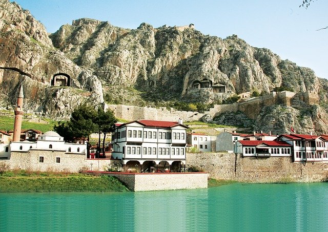
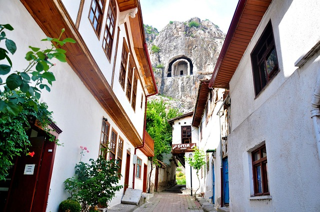
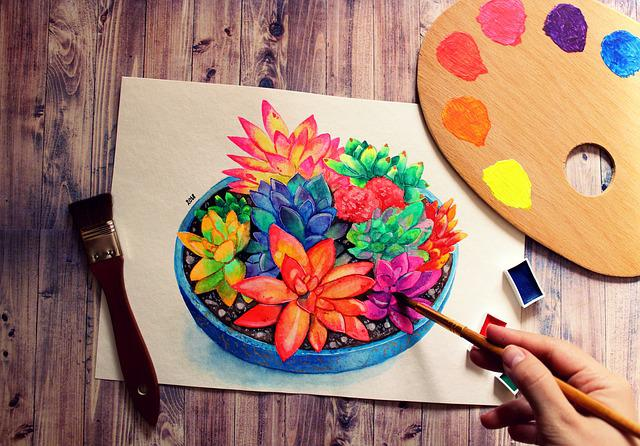
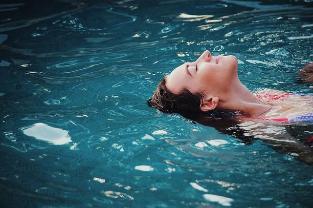

erhaba ben Selin Şahin. Sakarya Üniversitesi Bilgisayar Mühendisliği bölümü 1.sınıf öğrencisiyim. Kendimi yazılım alanında geliştirmeye çalışıyorum. 2002'de Amasya Merzifon'da doğdum, şuan Sakarya'da yaşamaktayım.

Amasya Merzifon'luyum, 14 Ekim 2002'de Merzifon'da doğdum. Çocukken İzmir'de yaşadım ardından tayin nedeniyle Kırıkkale'ye taşındım. Sakarya Üniversitesi Bilgisayar Mühendisliği bölümünü kazandığımdan dolayı şuan Sakarya'da yaşıyorum.
İlkokula İzmir Karşıyaka Girne İlköğretim Okulu'nda başladım. Bir süre orada öğrenim gördükten sonra Kırıkkale Atatürk Ortaokulu'nda devam ettim. Ardından Kırıkkale Osmangazi Fen Lisesi'ni kazandım ve bu liseden mezun oldum.
Biraz hobilerimden bahsedecek olursam bunlar seyehat etmek, yüzmek, dil öğrenmek, spor yapmak, yoga-meditasyon yapmak, voleybol oynamak, oyun oynamak, kitap okumak, müzik dinlemek, dizi-film izlemek, puzzle yapmak, sudoku çözmek, tiyatro seyretmek, çiçek beslemek, gitar çalmaktır.
Şuanda hedefim yazılım alanında ve yabancı dil konusunda kendimi epey geliştirmek. Okul ile paralel giderken Udemy üzerinden ve benzer paltformlardan yardım alarak programlama dillerini öğrenmeye ve projeler üzerinde uğraşmaya çalışıyorum.